1. 团队介绍
成员
刘宸宇、束伟
分工
- 刘宸宇：负责购买项目所需全部元器件；基于LOLIN S2 Mini开发板完成机械臂运动控制程序编写；完成机械臂成品组装、程序烧录及功能调试；解决嵌入式编程和硬件联调过程中的各类问题。
- 束伟：负责检索适配的开源3D打印机械臂项目；下载并整理3D打印模型文件；使用Bambu Studio进行打印参数优化；完成机械臂所有结构件的3D打印及后处理（去支撑、打磨）。
2. 制作过程
2.1 项目需求分析
设计并实现一款基于ESP32（LOLIN S2 Mini）的WiFi控制六轴机械臂，核心需求如下：
- 硬件层面：通过3D打印获取机械臂结构件，搭配舵机实现六轴运动，完成机械臂物理实体搭建；
- 软件层面：编写嵌入式程序实现WiFi联网，提供网页端可视化控制界面，支持各轴角度手动调节、复位、抓取/松开等核心功能；
- 交互层面：通过浏览器访问ESP32的IP地址，即可实时控制机械臂各关节运动，操作简单、响应及时。
2.2 核心元器件清单
- 舵机：MG996R × 3个、SG90 × 3个
- 基础配件：面包板 × 1个、杜邦线若干、数据线 × 1根
- 开发板：LOLIN S2 Mini × 1个
2.3 技术选型
2.4 时间规划
整体周期：2周
- 第一周：完成开源3D打印项目检索与文件下载、3D打印所有结构件；编写机械臂控制核心程序（舵机驱动、WiFi联网、网页界面）；
- 第二周：完成机械臂硬件组装、舵机接线；程序烧录与功能调试；解决联调过程中的硬件/软件问题；完成整体功能测试。
2.5 核心步骤（含遇到的问题与解决方法）
- 3D打印准备阶段
- 步骤：下载开源3D模型 → 切片参数优化（层高0.2mm、填充率20%、PLA耗材） → 打印结构件 → 去支撑/打磨处理；
- 问题1：部分连接件打印后尺寸偏差，导致舵机无法安装；
- 解决方法：在Bambu Studio中微调模型缩放比例（+0.5%），重新打印关键连接件；
- 问题2：打印过程中出现层纹严重、翘边；
- 解决方法：提升打印底板温度至60℃，增加边缘支撑，降低打印速度至50mm/s。
- 程序开发阶段
- 步骤：引脚定义 → 舵机驱动函数编写 → WiFi联网功能开发 → 网页控制界面设计 → 指令解析逻辑实现；
- 问题1：舵机角度控制出现抖动，响应不精准；
- 解决方法：优化servoMove函数，增加constrain限制角度范围，调整舵机脉冲宽度（500-2400μs）匹配舵机参数，确保接线正确与接触良好，确保供电稳定、电压足够；
- 问题2：WiFi连接不稳定，网页控制偶尔卡顿；
- 解决方法：优化WiFi重连逻辑，缩短handleClient轮询间隔，确保指令实时响应。
- 组装与调试阶段
- 步骤：机械臂结构件组装 → 舵机与开发板接线 → 程序烧录 → 功能测试与角度校准；
- 问题：部分关节运动时出现卡滞，无法达到预设角度；
- 解决方法：检查机械臂组装间隙，打磨过紧的连接件，重新校准舵机初始角度；
2.6 3D打印成果展示
3D打印零件渲染图
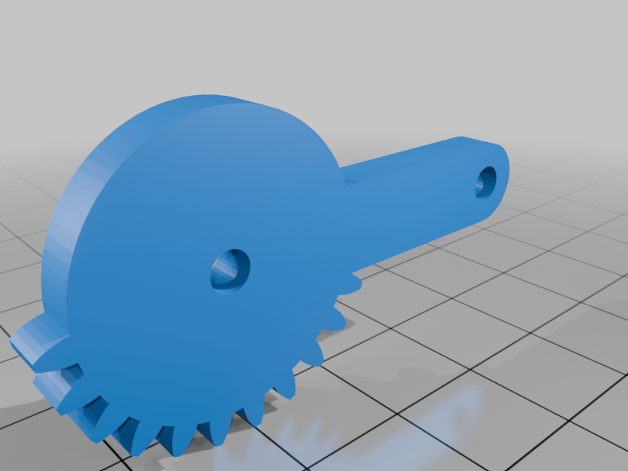
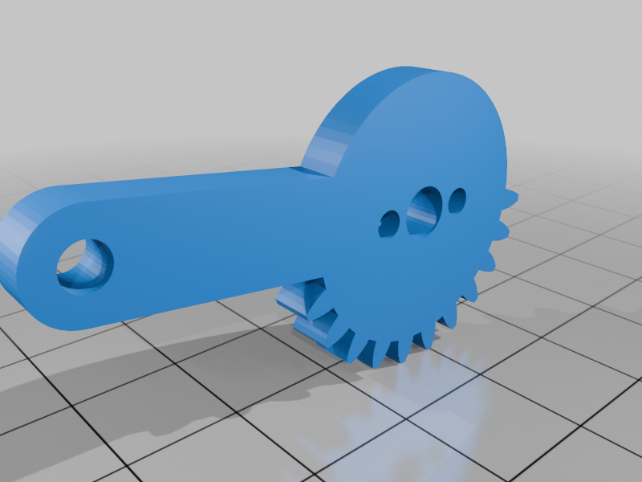
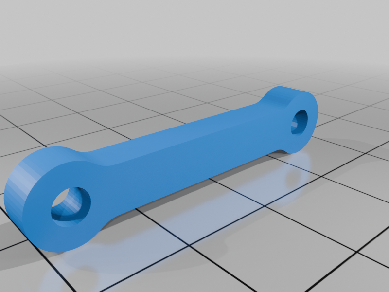
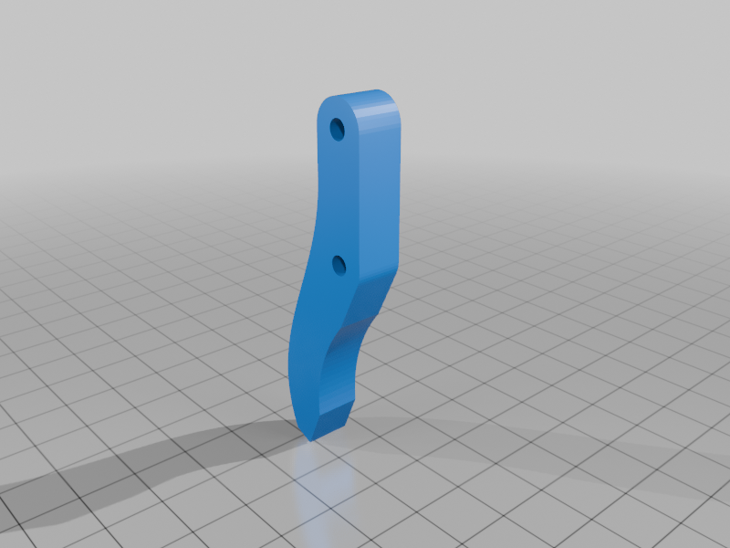
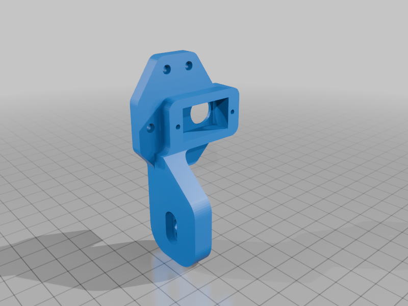
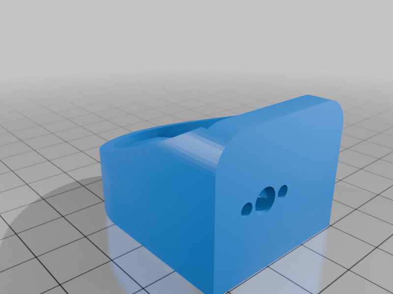
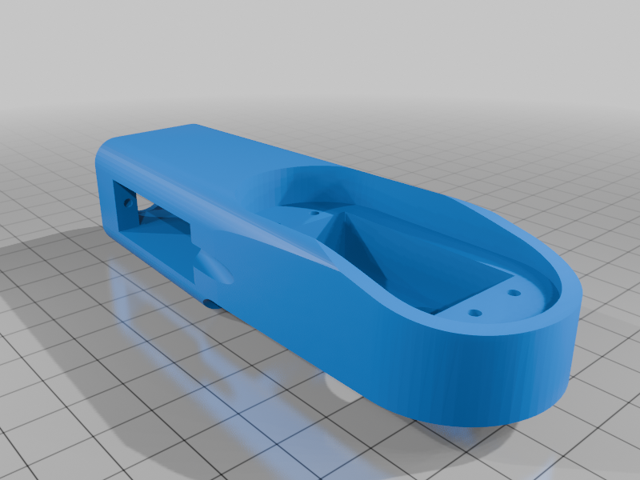
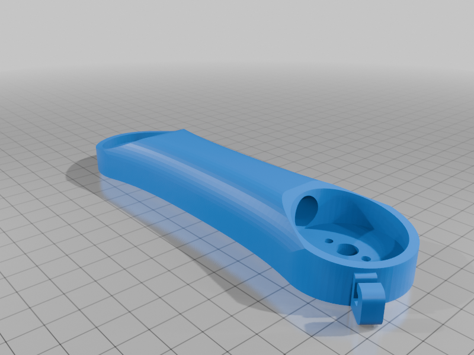
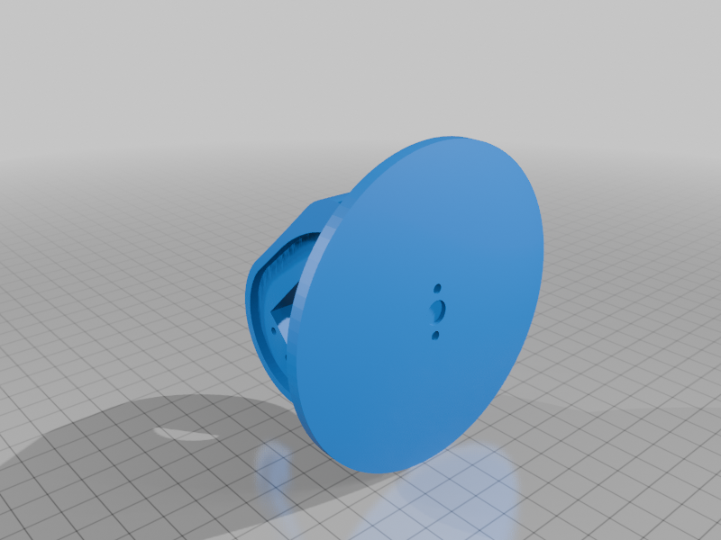
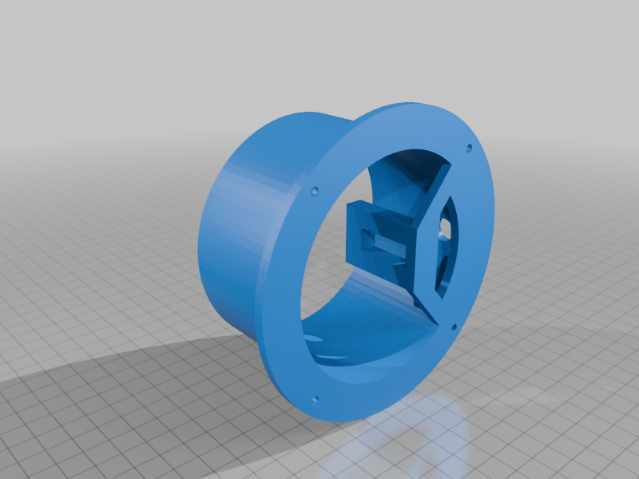
机械臂各结构件的3D模型渲染效果（底座、大臂、小臂、手腕、夹爪）。
3D打印文件下载
机械臂3D打印模型源文件（ZIP）
包含所有结构件的STL文件，可直接用于Bambu Studio切片打印。
机械臂组装实物图
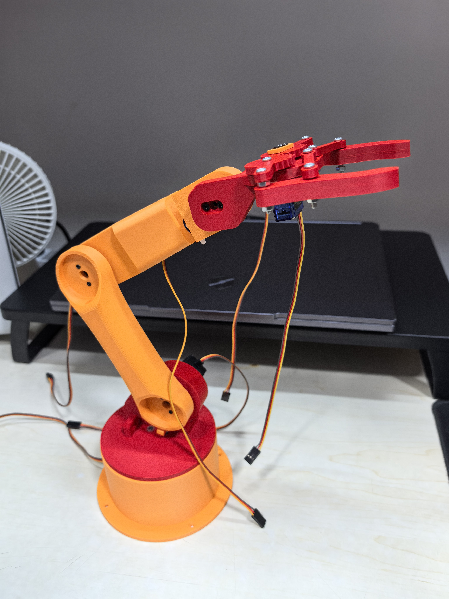
完成所有结构件组装、舵机与开发板接线后的机械臂成品。
2.7 机械臂控制程序
#include <ESP32Servo.h>
#include <WiFi.h>
#include <WebServer.h>
// 你的WiFi配置
const char* ssid = "不重要的Pura 70 Pro";
const char* password = "Lcyyc9426";
WebServer server(80);
// ====================== LOLIN S2 Mini 引脚 ======================
#define PIN_BASE 4 // 底座
#define PIN_SHOULDER 5 // 大臂
#define PIN_ELBOW 6 // 小臂
#define PIN_WRIST 7 // 手腕（上下俯仰）
#define PIN_CLAW 8 // 夹爪
#define PIN_WRIST_LR 9 // 手腕（左右旋转）
// 舵机对象
Servo base, shoulder, elbow, wrist, claw;
Servo wristLR;
// 夹爪参数
#define CLAW_OPEN 110
#define CLAW_CLOSE 30
// 当前角度
int baseAng = 90;
int shoulderAng = 90;
int elbowAng = 30;
int wristAng = 90;
int wristLRAng = 90;
int clawAng = CLAW_OPEN;
// ====================== 实时驱动 ======================
void servoMove(Servo &s, int &nowAng, int tarAng) {
tarAng = constrain(tarAng, 0, 180);
s.write(tarAng);
nowAng = tarAng;
}
// 机械臂复位
void armReset() {
servoMove(base, baseAng, 90);
servoMove(shoulder, shoulderAng, 90);
servoMove(elbow, elbowAng, 30);
servoMove(wrist, wristAng, 90);
servoMove(wristLR, wristLRAng, 90);
servoMove(claw, clawAng, CLAW_OPEN);
}
// ====================== 网页控制界面 ======================
String getPage() {
String html = F("<!DOCTYPE html><html lang='zh-CN'><head><meta charset='UTF-8'><title>六轴机械臂</title>");
html += F("<style>body{text-align:center;margin:20px;font-size:22px}");
html += F("input{width:95%;height:22px;margin:12px 0;border-radius:12px}");
html += F("button{padding:18px 32px;margin:12px;font-size:24px;border-radius:10px}</style></head><body>");
html += F("<h2>ESP32六轴机械臂控制</h2>");
html += "<div>底座<input type='range' min=0 max=180 value="+String(baseAng)+" oninput=fetch('/set?base='+this.value)></div>";
html += "<div>大臂<input type='range' min=0 max=90 value="+String(shoulderAng)+" oninput=fetch('/set?shoulder='+this.value)></div>";
html += "<div>小臂<input type='range' min=0 max=90 value="+String(elbowAng)+" oninput=fetch('/set?elbow='+this.value)></div>";
html += "<div>手腕上下<input type='range' min=0 max=180 value="+String(wristAng)+" oninput=fetch('/set?wrist='+this.value)></div>";
html += "<div>手腕左右<input type='range' min=0 max=180 value="+String(wristLRAng)+" oninput=fetch('/set?wrist_lr='+this.value)></div>";
html += "<div>夹爪<input type='range' min=30 max=110 value="+String(clawAng)+" oninput=fetch('/set?claw='+this.value)></div>";
html += F("<p><button onclick=fetch('/cmd?act=reset')>复位</button>");
html += F("<button onclick=fetch('/cmd?act=grab')>抓取</button>");
html += F("<button onclick=fetch('/cmd?act=release')>松开</button></p></body></html>");
return html;
}
// 网页请求处理
void handleRoot() { server.send(200, "text/html", getPage()); }
void handleSet() {
if(server.hasArg("base")) servoMove(base, baseAng, server.arg("base").toInt());
if(server.hasArg("shoulder")) servoMove(shoulder, shoulderAng, server.arg("shoulder").toInt());
if(server.hasArg("elbow")) servoMove(elbow, elbowAng, server.arg("elbow").toInt());
if(server.hasArg("wrist")) servoMove(wrist, wristAng, server.arg("wrist").toInt());
if(server.hasArg("wrist_lr")) servoMove(wristLR, wristLRAng, server.arg("wrist_lr").toInt());
if(server.hasArg("claw")) servoMove(claw, clawAng, server.arg("claw").toInt());
server.send(200, "text/plain", "OK");
}
void handleCmd() {
String cmd = server.arg("act");
if(cmd == "reset") armReset();
if(cmd == "grab") servoMove(claw, clawAng, CLAW_CLOSE);
if(cmd == "release") servoMove(claw, clawAng, CLAW_OPEN);
server.send(200,"text/plain","OK");
}
// ====================== 初始化 ======================
void setup() {
Serial.begin(115200);
base.attach(PIN_BASE, 500, 2400);
shoulder.attach(PIN_SHOULDER, 500, 2400);
elbow.attach(PIN_ELBOW, 500, 2400);
wrist.attach(PIN_WRIST, 500, 2400);
wristLR.attach(PIN_WRIST_LR, 500, 2400);
claw.attach(PIN_CLAW, 500, 2400);
WiFi.begin(ssid, password);
Serial.print("正在连接WiFi: "); Serial.println(ssid);
while (WiFi.status() != WL_CONNECTED) {
delay(300);
Serial.print(".");
}
Serial.println("\nWiFi连接成功！");
Serial.print("控制地址: "); Serial.println(WiFi.localIP());
server.on("/", handleRoot);
server.on("/set", handleSet);
server.on("/cmd", handleCmd);
server.begin();
armReset();
}
void loop() {
server.handleClient();
}
机械臂控制程序源文件（ino）
可直接在Arduino IDE中打开，适配LOLIN S2 Mini开发板，修改WiFi信息后即可烧录使用。
3. 成果演示
3.1 项目成品演示视频
机械臂WiFi控制演示视频，包含各关节运动、抓取/松开、复位等核心功能展示。
3.2 功能说明
本项目实现六轴机械臂的WiFi远程控制，各轴运动范围如下：
- 底座：左右旋转，角度范围0°-180°；
- 大臂：上下摆动，角度范围0°-90°；
- 小臂：上下摆动，角度范围0°-180°；
- 手腕（上下俯仰）：角度范围0°-180°；
- 手腕（左右旋转）：角度范围0°-180°；
- 夹爪：开合动作，角度范围30°（闭合）-110°（张开）。
核心功能：
- 网页端可视化滑块控制：实时调节各轴角度，响应延迟＜200ms；
- 快捷指令：一键复位（恢复初始角度）、一键抓取、一键松开；
- WiFi自连：开机自动连接指定WiFi，串口输出控制IP地址，即连即用。
3.3 测试结果
- 功能完整性：所有预设功能均实现，各轴运动无卡顿、无死点；
- 稳定性测试：连续通电运行1小时，WiFi连接无断开，舵机无明显发热；
- 精度测试：角度控制误差≤2°，满足简易机械臂日常操作需求。
3.4 可优化方向
- 硬件层面：更换扭矩更大的舵机，提升夹爪负载能力；增加电池供电模块，摆脱有线供电限制；
- 软件层面：增加蓝牙控制功能，兼容无WiFi场景；优化网页界面，增加角度数值显示、运动轨迹记录；
- 功能扩展：加入避障算法，防止机械臂运动过程中碰撞；实现预设轨迹自动运行（如抓取-放置自动化流程）；
- 结构优化：3D打印模型增加加强筋，提升机械臂整体刚性；优化连接件精度，降低运动噪音。